# 哈尔滨工业大学计算机系统 LAB2
# 一，实验基本信息
# 1. 实验目的
拆炸弹，了解汇编 and fun
# 2. 实验环境与工具
# 2.1 硬件环境
Intel i7-i0875H 64 位处理器 RTX2070
# 2.2 软件环境
Windows11 & Ubuntu 20.04 64 位
# 2.3 开发工具
vscode IDA pro gdb(peda)
# 二，各阶段炸弹的破解与分析
# 1. 初步分析
在 gdb 环境下安装 peda 或者 pwndbg 都会大大提高工作效率，工作界面友好很多
[peda & pwndbg 安装](Peda vs Pwndbg - GDB - p3ck3rw00d's blog (peckerwood.top))
$ gdb bomb
首先查看函数列表
$ info functions
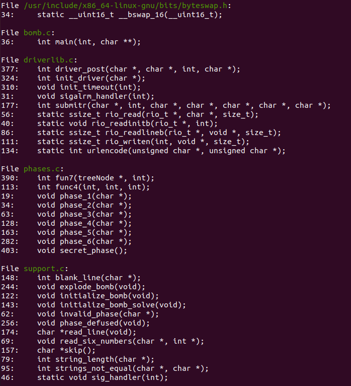
看到常规函数可以猜想可执行文件结构，phase_* 等代表不同的关卡，explode_bomb 为炸弹引爆函数 phase_defuse 函数应该是成功拆除炸弹的提示函数，其他函数根据函数名即可知道相应的功能。
大体知道文件结构之后即可设置断点，开始动态调试
$ b main
# 2. 第一关的破解与分析
进入 main 函数之后一步步 n
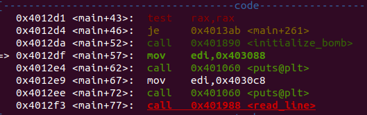
可以看出初始化炸弹的函数被调用，之后一直单步步过到 read_line 函数
提示输入
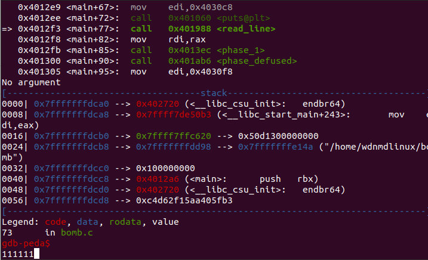
先输入 111111，继续前进
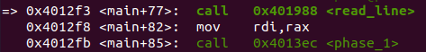
很明显，我们输入的 "111111" 被送到 rdi 寄存器然后调用函数 phase_1
使用指令 s 进入 phase_1 函数
$ disas #查看phase_1函数的汇编
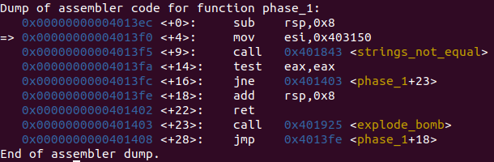
函数接受的输入存在了 rdi 寄存器中，这里又从内存中取出一段数据存入 rsi
接着调用函数 string_not_equal
参数传入函数时，使用寄存器的顺序 寄存器 **% rdi, % rsi, % rdx, % rcx, % r8, % r9** 分别用来保存函数的 6 个参数，而 % rax 用来保存函数的返回值。
所以第一关就是考简单的函数调用，单步步过之后查看 rsi 寄存器的值就能的到第一关的 ans
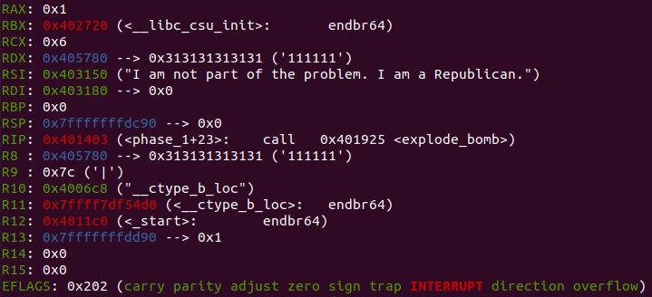
这里就体现出了 peda 的好处，可以直接查看寄存器的值以及 rip 所指地址附近的汇编代码，可以看到我们输入的值
"111111"
以及正确答案
"I am not part of the problem. I am a Republican."
# 3. 第二关的破解与分析
执行如下命令直接运行到 phase_2 处
k #中断当前调试进程 | |
b phase_2 | |
r #重新开始动态调试 |
之后会提示输入第一关密码，输入后程序停止，之后开始单步调试
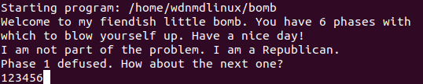
我们继续输入 123456 尝试
$ disas # 查看phase_2的汇编代码
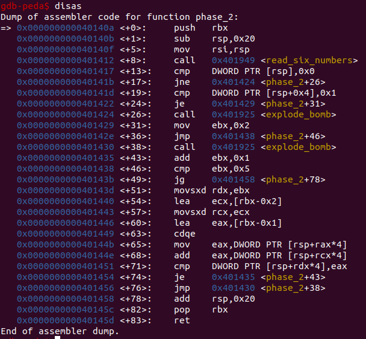
观察下图
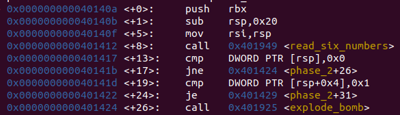
可以看到 Phase_2 调用了 read_six_numbers 函数读入了 6 个数字，并且，由函数开头声明栈的操作，可以看出是通过栈来传递参数给 read_six_numbers 函数
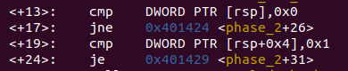
这里的意图很明显了，既然是通过栈传递参数，这里是检验输入的前两个值
可以知道一共需要读入六个数，其中前两个数分别为 0 1 验证前两个数成功后跳转到
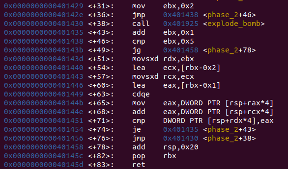
后面的这部分其实是一个循环（因为之前学习汇编的时候王爽老师书里面讲的控制循环的寄存器是 cx (rcx,ecx)，所以第一时间看到代码的时候也是没反应过来是循环，但是看到 ebx 寄存器被赋初值，然后每次加一接着不断地跳回到之前的代码执行，最后还不断地将 ebx 的值与固定值 0x5 比较，才发觉应该是循环）
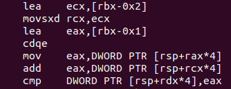
这段代码也很好理解， &ecx=&ebx-1 &eax=&ebx-1 接着比较 A [&edx] 与 A [&ecx]+A [&eax] 的大小，这不就是斐波那契么 ((*･ω< ) )
所以将这一关翻译成 C 语言就是
for ( i = 2; i <= 5; ++i ) | |
{ | |
if ( numbers[i] != numbers[i - 2] + numbers[i - 1] ) | |
explode_bomb(); | |
} |
解题脚本如下
#include <stdio.h> | |
int main() | |
{ | |
int nums[6]; | |
*(long long int *)nums=0x100000000LL; | |
for(int i=2;i<=5;i++) | |
{ | |
nums[i]=nums[i-1]+nums[i-2]; | |
} | |
for(int i=0;i<6;i++) | |
{ | |
printf("%d\n",nums[i]); | |
} | |
} | |
// 0 1 1 2 3 5 |
# 4. 第三关的破解与分析
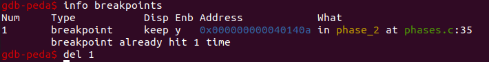
清除断点之后在 phase_3 下断点，接着 r 运行，输入前两关得到的密码之后程序就会停在第三关
提示输入
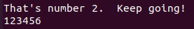 我们继续输入 "123456" 尝试
接着单步步过
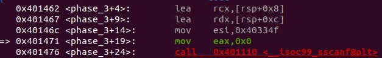
发现从内存中向 esi 寄存器中传入了数据，si 运行到赋值完成，查看 esi 内保存的值
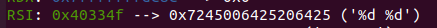
可以看到是格式化输入的字符串，由此可知后面的 scanf 函数接受的是两个整型变量
之后进入第一层判断，判断 scanf 的返回值
我们可以通过运用函数 scanf () 的返回值的意义（即 “所输入的数据与格式字符串中匹配次数”），来把控我们的输入格式的正确性.
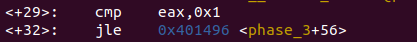
这里要求返回值 > 1，之后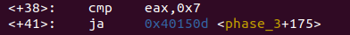 要求输入的第一个参数小于 7
完成这些前置判定之后
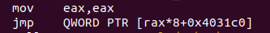
该代码段中包含一段内存地址
使用 gdb 查看内存地址的命令查看所指内存地址
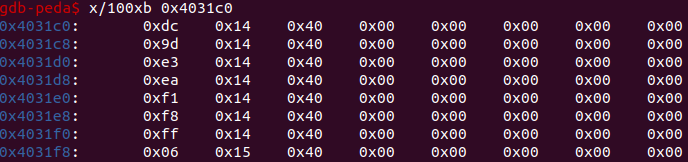
由于小端序存储的原因，上面地址简化一下就是 0x4014dc~0x401506 地址值
所以可以判断这是一个跳转表
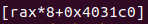
并且通过 rax 控制跳转
switch 语句可以根据一个整数索引值进行多重分支。
GCC 根据 case 的数量和 case 值的稀疏程度来翻译 switch 语句，当 case 情况比较多 (例如 4 个以上)，并且值的范围跨度比较小时，就会使用跳转表。
跳转表是一个数组，表项 i 是一个代码段的地址，这个代码段实现当开关索引值等于 i 时程序应该采取的动作。
由此可以判断这关考查的是 switch 语句的汇编语言的实现
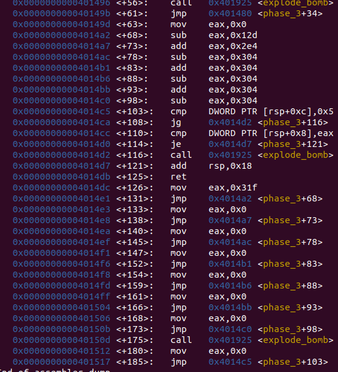
继续回看这段代码就可以由此列出反汇编之后的 C 语言代码
void __fastcall phase_3(char *input)
{
int v1; // eax
int v2; // eax
int v3; // eax
int v4; // eax
int v5; // eax
int v6; // eax
int v7; // eax
int v8; // eax
int sum; // [rsp+8h] [rbp-10h] BYREF
int index; // [rsp+Ch] [rbp-Ch] BYREF
if ( (int)__isoc99_sscanf(input, "%d %d", &index, &sum) <= 1 )
explode_bomb();
switch ( index )
{
case 0:
v1 = 799;
goto LABEL_5;
case 1:
v1 = 0;
LABEL_5:
v2 = v1 - 301;
goto LABEL_6;
case 2:
v2 = 0;
LABEL_6:
v3 = v2 + 740;
goto LABEL_7;
case 3:
v3 = 0;
LABEL_7:
v4 = v3 - 772;
goto LABEL_8;
case 4:
v4 = 0;
LABEL_8:
v5 = v4 + 772;
goto LABEL_9;
case 5:
v5 = 0;
LABEL_9:
v6 = v5 - 772;
goto LABEL_10;
case 6:
v6 = 0;
LABEL_10:
v7 = v6 + 772;
break;
case 7:
v7 = 0;
break;
default:
explode_bomb();
}
v8 = v7 - 772;
if ( index > 5 || sum != v8 )
explode_bomb();
}
// from IDA pro
很容易就可以得到答案 2 -32 (答案不唯一)
# 5. 第四关的破解与分析
和前面方法一样，下断点，然后运行到 phase_4 处，并且继续输入 "123456"
直接使用 disas 命令查看汇编代码
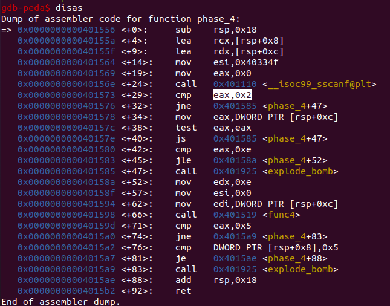
和第三关一样，先根据 scanf 的返回值判断输入格式以及输入个数的正确性
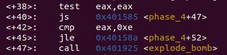
接着这段代码要求 eax 不能等于 0 并且 eax 小于等于 14 即 eax>0&&eax<=14
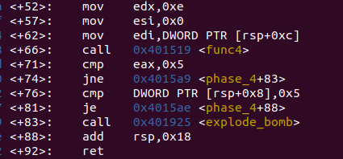
后面这一段也很好理解，就是将 scanf 输入的第一个参数传给 edi 寄存器并且将 esi 寄存器值赋为 0，调用 fun4 之后的结果再与 0x5 比较，由此可知 fun 返回值应该为 5
由于上面知道了需要输入的是两个整形数，所以重新开始调试，并且输入 "1 2"
成功通过第一道判断
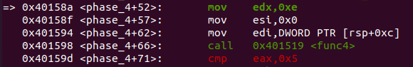
接着一直 si 并进入 fun4，查看 fun4 的汇编代码
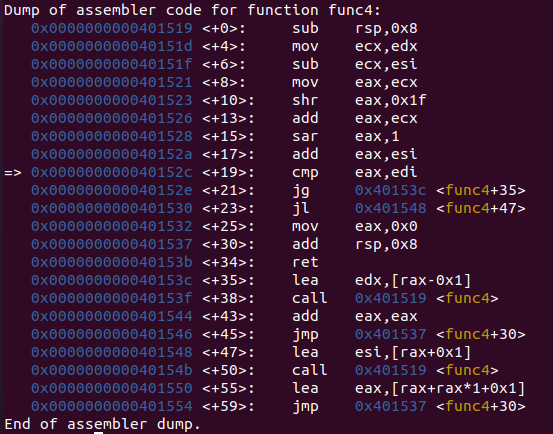
一步步向下分析直到代码
shr eax,0x1f
关于这段代码，特别感谢我的两位同学指出我的错误 @ywy_c_asm & @cnwangjihe
那一段是用来处理负数整除问题的
他下方的 sar 是带符号位的右移
- 15 右移一位结果是 - 8，但 c 里面整除二结果应该是 - 7，所以需要额外加一
正数右移一位和整除二则是等价的 \ from @cnwangjihe带符号右移永远等价于除二向下取整，然后再用符号位调整一下 from @ywy_c_asm
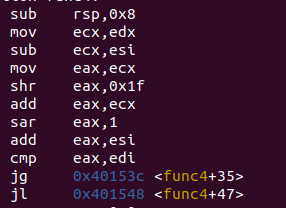
这段代码结合调用 fun4 函数之前的代码一起分析就能知道 eax 等于 fun4 接收的参数 esi 与 ecx 的平均数 即 &eax = &esi+(&ecx-&esi)/2
最后将 eax 再与 edi 相比较，根据比较结果再次跳转，并且再次调用 fun4
由此可知，这一关考查的是递归函数的汇编语言实现
并且由汇编可以轻松分析 C 语言函数
int __fastcall func4(int val, int low, int high)
{
int v3; // eax
v3 = low + (high - low) / 2;
if ( v3 > val )
return 2 * func4(val, low, v3 - 1);
if ( v3 < val )
return 2 * func4(val, v3 + 1, high) + 1;
return 0;
}
//from IDA pro
解决 fun4 的问题就可以得出当时 scanf 接收的第一个输入值的正确值，还有第二个输入值的值未确定，继续看跳出递归之后的代码段
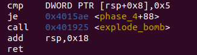
至此，两个参数的值都能确定
解题脚本如下
#include <stdio.h> | |
int fun4(int uv,int low,int high); | |
int main() | |
{ | |
int uv; | |
int sum; | |
for( uv=0;uv<=14;uv++) | |
{ | |
sum=fun4(uv,0,14); | |
if(sum==5) | |
{ | |
printf("%d",uv); | |
break; | |
} | |
} | |
return 0; | |
} | |
int fun4(int uv,int low,int high) | |
{ | |
int v3=low+(high-low)/2; | |
if(v3>uv) | |
return 2*fun4(uv,low,v3-1); | |
if(v3<uv) | |
return 2*fun4(uv,v3+1,high)+1; | |
return 0; | |
} | |
// output 10 |
# 6. 第五关的破解与分析
同前几关的方式，在 phase_5 处打断点，然后运行到 phase_5, 接着继续输入 "123456" 测试，单步步过到达 phase_5, 继续 disas 查看汇编代码
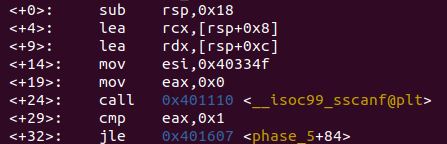
前面的代码都很熟悉，0x40334f 处的数据正是第四关里的 "% d % d", 根据提示重新输入测试值 "1 2"
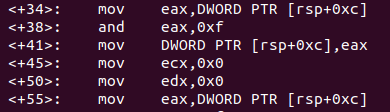
该段代码对参数做了一些运算 ，函数通过栈来传递参数，并且传参顺序与 C 语言中参数顺序刚好相反，所以这里 [rsp+0xc] 即为第一个参数，记为 val1，也就是我们输入的 1 ，[rsp+0x8] 即为第二个参数记为 val2，也就是我们输入的 2。
接着，程序又定义了两个变量 (寄存器)，ecx=0,edx=0, 分别记作 v3,v4
所以这段汇编代码翻译为 C 代码即为
val1 &= 0xf; | |
v3 =0; //ecx | |
v4 =0; //edx |
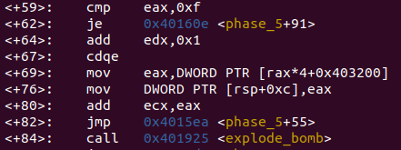
这段代码其实已经很好理解了，考点就是数组的汇编语言实现
查看 0x403200 处的数据
x/100xb 0x403200 |
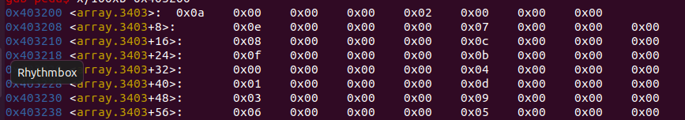
能够看出来是数组，既然是数组，就可以用另一种方法提取数组 (之前搞逆向的时候，用 IDA PRO 可以直接快捷键 shift+e 就能提取数组，但是 gdb 只能以一种很原始的方式)
p *array@length #array 可以是数组名也可以是内存地址，length 指的是想要查看的位数 |
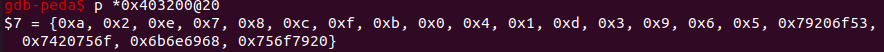
后面的乱码及说明不是数组内容，取前面的即可。
翻译成 C 代码即是
while(val1!=0xf) | |
{ | |
v4++; | |
val1=array[val1]; | |
v3+=val1; | |
} | |
//array[]={0xa, 0x2, 0xe, 0x7, 0x8, 0xc, 0xf, 0xb, 0x0, 0x4, 0x1, 0xd, 0x3, 0x9, 0x6, 0x5} |
循环结束之后到达
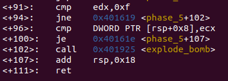
这里比较了 val2 与 v3 的大小关系，并且要求 val2 与 v3 大小相等
据此可以写出解题脚本
#include <stdio.h> | |
int main() | |
{ | |
int arr[]={ 10,2,14,7,8,12,15,11,0,4,1,13,3,9,6, 5}; | |
int p; | |
for(int i=0;i<=15;i++) | |
{ | |
p=i; | |
p &=15u; | |
int v2=0; | |
int v1=0; | |
while(p!=15) | |
{ | |
++v2; | |
p=arr[p]; | |
v1+=p; | |
if(v2==15) | |
printf("searched i=%d v1=%d",i,v1); | |
} | |
} | |
return 0; | |
} | |
// 直接爆破 (～￣▽￣)～ |
得出答案
# 7. 第六关的破解与分析
个人感觉 objdump 的界面不是很友好，比较乱，更不如 gdb-peda 用起来方便，所以继续使用 gdb (其实使用 IDApro 会简单很多，但是为了检验一下自己的汇编基本功，就还是嗯看汇编代码吧)
老方法，在 Phase_6 处下断点，然后 run 到 Phase 后使用 disas 命令查看汇编
个人经验 ：寄存器在每个独立的代码段中充当的更多的是局部变量，汇编语言通过对寄存器的完美使用来实现不同的功能
既然寄存器大多扮演局部变量，所以为了方便分析，给每个寄存器都设一个特定的变量名，如下
r12 == j rbp == i rbx== n rax == p rcx == m rdx == v1 rdi ==v2
这里暂时不知道各个变量的类型，等到后面分析就会一一确定
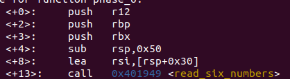
这段代码的作用是定义变量同时建立堆栈，然后给 rsi 赋值之后作为参数送入函数 read_six_numbers, 查看 read_six_numbers 函数的汇编代码
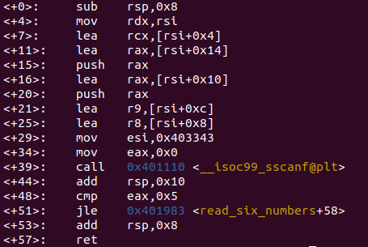
LEA 与 MOV 的区别
lea 是 “load effective address” 的缩写，简单的说，lea 指令可以用来将一个内存地址直接赋给目的操作数，例如：
lea eax,[ebx+8] 就是将 ebx+8 这个值直接赋给 eax，而不是把 ebx+8 处的内存地址里的数据赋给 eax。
而 mov 指令则恰恰相反，例如：
mov eax,[ebx+8]
则是把内存地址为 ebx+8 处的数据赋给 eax。
所以调用 read_six_numbers 函数之前
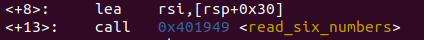
这里的 lea rsi,[rsp+0x30] 的目的就是将 rsp+0x30 这段地址直接赋值给 rsi，而不是将 rsp+0x30 处的值传给 rsi。
接着进入 read_six_numbers 后
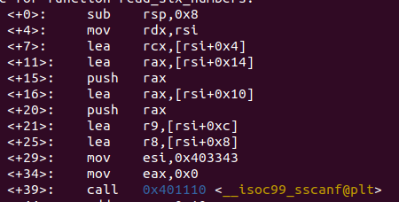
这里我原本以为的是获取六个输入变量的地址，然后将地址传入 scanf 函数直接读入，但是分析这一段是发现了问题，这里首先是通过 rax 寄存器向栈中压入了两个值，然后在调用 scanf 读值，根据前面几关中的经验，scanf 函数的参数首先是读入值的格式化字符串也就是前几关常见的类似 "% d % d" 这种，在 read_six_numbers 函数中 0x403343 地址处的值扮演了这个角色，查看该处的数据值
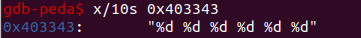
果然是读入了六个整数，所以 scanf 函数一共接受了 7 个参数
当参数个数小于等于 6 个时，使用寄存器 rdi,rsi,rdx,rcx,r8,r9，从第 7 个参数开始通过栈传递，顺序为从右往左入栈
这样就可以解释的通为什么 read_six_numbers 会选择先将值先入栈，再调用 scanf
读完之后继续分析 phase_6
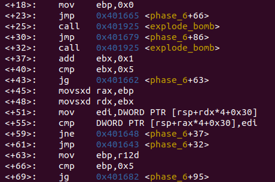
汇编语言写的循环结构都有很强的套路性，通常都用一个固定的寄存器表示一个循环变量，然后也包含循环结束标志，还有每次循环循环变量如何发生改变 (也就是 for 循环括号里的内容) 据此，我们可以很容易的确定循环部分
如上图，我们可以发现外围循环是以 ebp 为循环变量的循环，内嵌了以 ebx 为循环变量的循环
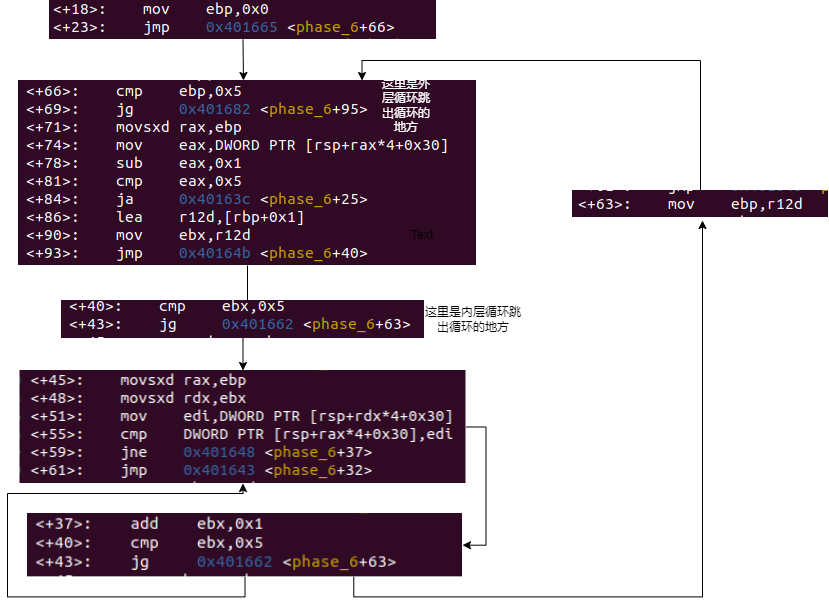
分析循环结构的时候如果遇到跳出循环的语句，可以做标记然后不跳出，继续执行后面的代码，并且很有可能后面的代码就是循环执行的部分，就像上图中的一样
分析后很简单就能写出 C 代码
int i; //rbp | |
int n; // rbx | |
int p; //rax | |
int array[6]; //[rsp+0x30] ~ | |
for(i=0;i<=5;i++) | |
{ | |
if(array[i]-1>5) | |
bomb(); | |
for(n=i+1;n<=5;n++) | |
{ | |
if(array[n]==arrat[i]) | |
bomb(); | |
} | |
} | |
/* tips: dword ptr [] 是整型数值 | |
qword ptr [] 是一个指针 | |
*/ |
再往下看
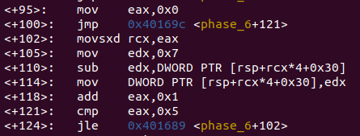
这段也是很明显的循环结构，直接翻译成 C 代码如下
int p; //rax | |
for(p=0;p<=5;p++) | |
{ | |
array[p]==7-array[p]; | |
} |
后面也是一样的分析方法
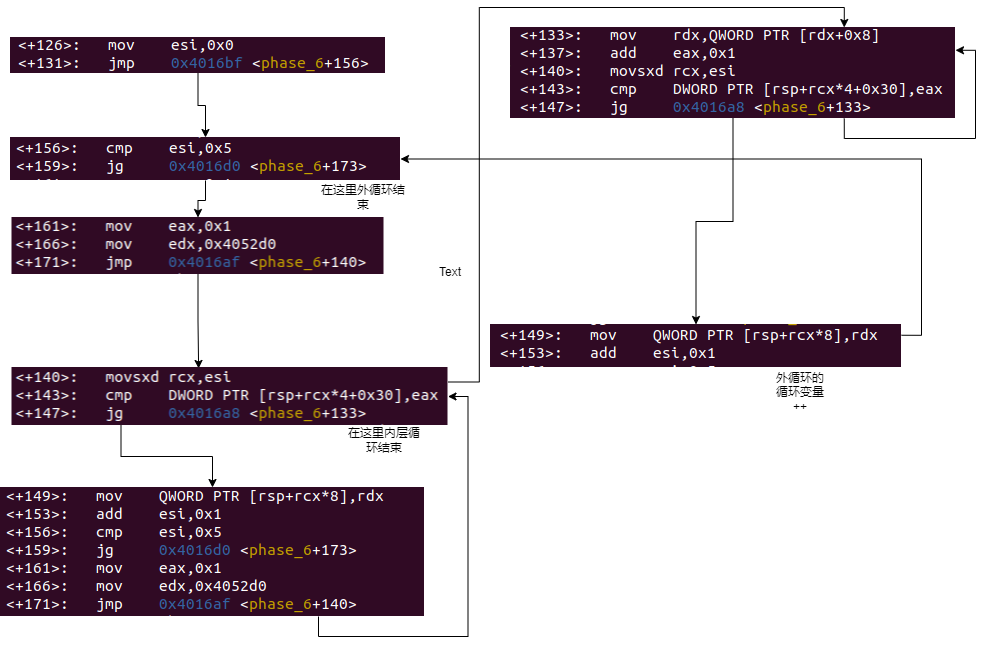
这里要注意的是之前的 array [] 数组地址是 [rsp+0x30]
但是这里出现了一个新的地址，[rsp]，这是 phase_6 自己的数组，起名为 newarr [6]
还有一个点需要注意
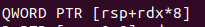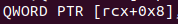
这两者相同点是 DWORD PTR, 说明两者都是指针变量，不同点是前者 [rsp+rdx * 8] [ ] 里面有 rdx 寄存器，也就是说 rdx (寄存器) 做索引，所以这里的 [rsp+rdx*8] 其实就是数组的地址，而 rdx 也就是数组的索引
后者没有索引，而且其实寄存器是 rcx 而不是栈顶指针 rsp
通常用这种形式表示链表 链表的 next 指针刚好占 8 个字节 (实验环境为 64 位).
一个指针在 32 位的计算机上，占 4 个字节；
一个指针在 64 位的计算机上，占 8 个字节。
所以这里的 [rcx+0x8] 就相当于 rcx=rcx->next
说到这里，后文中出现的
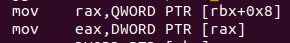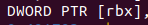
这两者都是 DWORD PTR , 说明两者都是整型数据，所以这里的 **[rbx] 就是 node->value**
而 **[rbx+0x8] 就是 node->next->value**
这样的话就可以根据汇编写出来 C 代码
int v3; //rsi | |
int p; //rax | |
listnode* v1;//rdx | |
for(v3=0;v3<=5;v3++) | |
{ | |
p=1; | |
v1 = node; // 指向 0x4052d0 | |
while(array[v3]>p) | |
{ | |
v1=v1->next; | |
++p; | |
} | |
newarr[v3]=v1; | |
} |
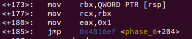

认准循环变量，然后找跳转条件，就能很容易的分析出来这段代码
listnode* n = newarr[0]; // rbx | |
listnode* m = newarr[0]; //rcx | |
listnode* v1 ; // rdx | |
int p; //rax | |
int i; //rbp | |
for(p=1;p<=5;p++) | |
{ | |
v1=newarr[p]; | |
m->next = v1; | |
m=v1; | |
} | |
m->next = 0; | |
for(i=0;i<=4;++i) | |
{ | |
if(n->value <n->next->value) | |
bomb(); | |
n=n->next; | |
} |
函数结构分析出来后，就知道这一关考查的是链表的汇编语言实现，我们接着查看链表的结构
x/100xb 0x4052d0 |
结果如下
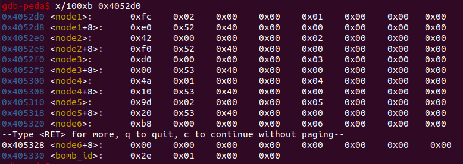
果然是链表，<nodex> 是 "value" < nodex+8 > 是 "next".
自己动手写链表虽然简单但是总归有点麻烦，直接用 IDA PRO
选中链表节点之后 使用快捷键 shift+e 提取
将分析的得到的 C 语言代码进一步分析就能知道，用户输入的数组 arr [6] 经过计算之后使链表元素按 value 值的降序排列
上一步又得到了不同节点的 value 值，所以人工排序就能得到处理之后的 arr [6]，又因为之前

所以就可以逆向得到用户要输入的正确的数组
所有的答案就在这里了。
I am not part of the problem. I am a Republican.
0 1 1 2 3 5
2 -32 (答案不唯一)
10 5
5 115
6 2 3 4 1 5
# 7. 隐藏关卡的分析与破解
但是，还有一个问题
之前查看函数时还有一个 secret_phase, 但是在整个拆弹过程中也没有发现这个隐藏的炸弹，所以怀疑是有函数调用该隐藏关卡
继续查看该函数列表，发现与调用隐藏关卡相关的好像只有 phase_defused
disas phase_defused //查看函数汇编代码 |
函数刚开始做了判断，若接收 6 个字符串则向下跳转，否则函数返回。
据此可知只有完成所有的六个关卡才能够开启隐藏关
下面是对 sscanf 函数的调用
int sscanf(const char *str, const char *format, ...)
- str -- 这是 C 字符串，是函数检索数据的源。
- format -- 这是 C 字符串，包含了以下各项中的一个或多个：空格字符、非空格字符 和 format 说明符。
一共两个格式化参数。参数 str 为要读取数据的字符串，参数 format 是用户指定的格式
查看 0x403399 和 0x405870 处的内存
由此可知需要输入的是 "% d % d % s" 类型的变量，并且是从 input_srings 处读取的
之后，若成功读入三个参数，则直接跳转
下面这里就和第一关基本一样，直接查看 0x4033a2 处的值
就说明第三个参数是这个字符串，
继续往下看并且查看相应内存的数据之后就知道能够开启隐藏关卡了
但是还有一个问题是在哪一关输入这个神秘的字符串才能开启隐藏关呢
上面提到了 sscanf 函数的第一个参数是要读取的字符串的，但是当时查看该参数内存地址时并没有发现有用信息，推测是要在程序启动之后才能知道该内存具体的数值，所以下一步动态调试 phase_defused 函数来查看 sscanf 函数第一个参数的值以及推断在哪一关进入隐藏关卡。按照如下步骤操作，先在 Phase_4 处下断点，然后运行直到断点处，之后再在 phase_defused 函数处下断点，continue 进入 phase_defused 函数，如图
进入 Phase_defused 函数后发现有个关键跳转，就是验证输入字符串的数量是否等于 6，这里我们直接使用 set 命令 "作弊"。
刚开始是因为看到有 JE 跳转指令，所以我尝试更改 ZF 的值来更改程序运行方向，但是失败了，接着我看到了 cmp 后面是 num_input_strings 的地址，所以我查看了一下，发现数值为 4，也就是说一共输入了 4 次字符串，我尝试直接更改内存里的数据变成 6，但是失败了，所以我直接 set 后面跟变量名，成功了，这里就积累了经验，直接对内存地址进行修改可能会失败，更好的方法就是直接修改变量的值。
修改完之后单步步过，直到之前的 sscanf 的第一个参数的内存地址，查看之后发现竟是第四关我们输入的密码，所以，就能推断出要在第四关输入密钥才能带我们进入隐藏关卡
既然已经直到如何进入隐藏关卡，之后就可以破解隐藏关卡了
直接查看汇编代码，核心函数为 fun7，并且查看 fun7 函数信息
知道函数接受一个树节点 (rdi)，和一个整数 (rsi)
C 库函数 int atoi(const char *str) 把参数 str 所指向的字符串转换为一个整数（类型为 int 型）。
这个整数自然就是玩家输入的字符串转变而来，rdi 的初值就可以是树的根节点
尝试查看二叉树的结构
很大的一棵树，但是不是很难分析
接着进入 fun7，发现很像之前一关的递归调用，有了上次的经验，我们就关注于每个条件分支
test eax,eax //这种汇编代码段的意义在于判断eax值是否为0或者是否为空
je [place]
于是就可以得出第一个分支
if(!node) | |
{ | |
return -1; | |
} |
接着往下看
这里首先是将根节点的 value 传给 eax，然后将 eax 与 fun7 的第二个参数比较
所以就可以根据下面的跳转条件得到其他分支
int fun7(treenode* node,int val) | |
{ | |
if(!node) return -1; | |
if(node->value>val) return 2*fun7(node->left,val); | |
if(node->value==val) return 0; | |
return 2*fun7(node->right,val)+1; | |
} |
分析完 fun7 之后我们接着回到 secret_phase
就能继续编写出 secret_phase 的 C 语言代码
void __cdecl secret_phase()
{
char *line; // rax
int v1; // ebx
line = read_line();
v1 = atoi(line);
if ( (unsigned int)(v1 - 1) > 0x3E8 )
explode_bomb();
if ( fun7(&n1, v1) != 4 )
explode_bomb();
puts("Wow! You've defused the secret stage!");
phase_defused();
}
// FROM IDA PRO
至此，我们的分析工作全部完成
最后根据第四关积累的经验，成功解出隐藏关卡密码 7
# END
# 三，收获与心得
向 CMU 设计该实验的所有老师同学致敬，精密而又有趣的实验总是让人沉浸其中，
在一次次的解题中不断收获成就感，不断获得新知识，这种强烈的正反馈给了学生兴趣与好奇
salute ！